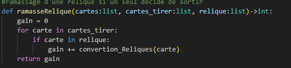

Mise en place des nos idées:
Avant de commencer à développer notre code, nous avons pris quelques jours pour mieux comprendre le fonctionnement du jeu.
Ensuite, nous avons échangé nos idées et avons commencé à mettre en place les sous-programmes nécessaires pour l'implantation
et le bon fonctionnement du jeu.
Nos sous programmes:
- Class Joueur
Répresente un joueur et contient :
=> son nom,
==> son sac ,
==>son coffre,
===> sa stratégie
- Class Strategy Humain
-- Permet à l'utilisateur de saisir sa décision lui-même
- Tirage d'une carte
-- Fonction qui retourne une carte tirée au hasard dans le tas de carte
- Est pieger
-- Fonction boolèenne qui retourne True si il y a eu un piège ou False sinon
- Partage gain
-- Permet de partager les gains après tirage de la carte
- Partie d'une manche
-- Ce sous programme permet de joueur une partie d'une manche, c'est-à-dire:
- =>tirage de carte
- ==>prise de décisions des joueurs
- ===> mise à jour de la liste des joueurs
- ====> partage des gains
- =====>Suppresion des cartes pièges à la fin de la manche
- ======>Mise des gains dans le coffre après la manche
- Jeu
-- Prend en argument la liste et le nombre des joueurs et
-- il permet de jouer au jeu Diamant en demandant à l'utilisateur le nombre de participant.
Test de nos sous programmes:
Après codage de nos fonctions nous avons utiliser la Strategie humain pour simuler des joueurs. Au début y avait trop d'erreur, par exemple il y avait:
=> incohérence dans le partage des gains,
==> problème avec la mise à jour de la liste des joueurs restants ,
===> difficulté à gérer les réliques,
Par la suite, nous nous sommes rendu compte que certaines de nos fonctions n'allaient pas nous servir comme la fonction
booléenne qui nous permettait de savoir si une manche est terminée ou pas (s'ils ont rencontré des pièges ou bien, ils ont
tous décidé de sortir) puisque par après,
nous avons constaté que dans notre fonction partie_manche() nous pouvions juste
ajouter un booléen que nous initialiserons à "True" pour dire que nous sommes en début de manche et faire une
boucle "While" et à l'intérieur faire nos différents traitements. De ce fait, nous avons changé notre fonction
partie_manche() qui n'était pas vraiment top et c'est tant mieux, car nous avons puis optimiser notre programme et éviter des
appels de fonction inutile en faisant recours à des variables booléennes.
Nous avons aussi codé d'autres fonctions
comme ramasseRelique() :

Cette fonction retourne la valeur entière d'une carte relique si elle a été ramassée (que nous avons notée par relique sol dans le code),
et cette fonction facilite ainsi la collecte des réliques si un seul joueur décide de sortir
Après le test et la correction de nos fonctions, nous sommes passés à l'implantation de la stratégie de l'intelligence artificielle.